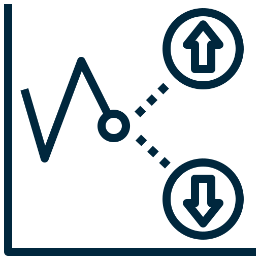

Real-time visibility. AI-powered insights. Investment-grade transparency.
Advanced monitoring and intelligence across critical infrastructure categories
Comprehensive monitoring of water distribution networks, treatment facilities, and irrigation systems across Africa. Our platform provides real-time visibility into water quality, flow rates, and infrastructure performance to ensure sustainable water management and attract investment in critical water projects.

Predictive AnalyticsFrom fragmentation to intelligence-driven capital deployment
Fragmented infrastructure data creates uncertainty, delays funding, and increases risk for investors across Africa.
IoT sensors, satellite imagery, and drone monitoring provide real-time visibility into project status and performance.
AI analytics transform raw data into actionable insights, risk scores, and investment recommendations.
Transparent, verified infrastructure becomes investable, accelerating funding and project delivery across sectors.
Join the platform bringing transparency and intelligence to Africa's infrastructure growth
Get Started